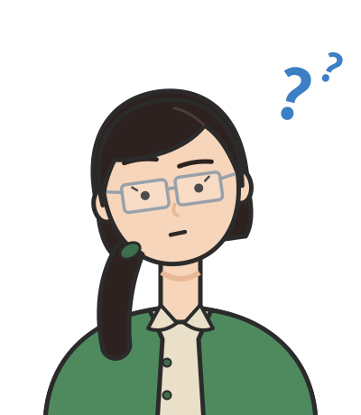
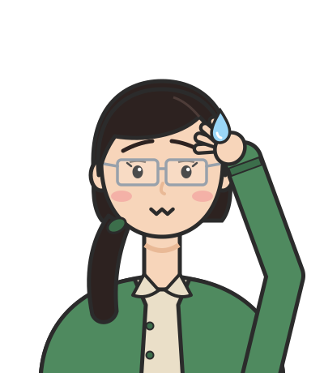
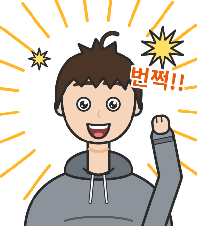

대화 연습
선생님의 수업. 김민준(학부 3학년, ML 강의 몇 개 수강)과 이서연(수학과 3학년)이 문제를 풀고, 선생님이 틀린 곳을 짚는다.
문제 1. 같은 엔트로피, 다른 단위
동전 4개에서 "앞면이 2개"인 거시상태의 엔트로피를 nat과 bit로 구하라.

W = 6이니까 S = ln 6 ≈ 1.79예요. 비트로도 1.79비트고요.

민준아, 나는 4비트 같은데. 동전 4개면 질문 4번이면 다 알 수 있잖아.

둘 다 반만 맞았어요. 민준 학생, 1.79는 자연로그로 재서 nat이에요. 비트는 log₂ 6 ≈ 2.58이에요. 같은 거리를 미터와 피트로 재면 숫자가 다르지만 거리는 같은 것과 같아요. 숫자만 쓰고 단위를 안 쓰면 두 값을 비교할 수 없어요.

그럼 제 4비트는요?

질문 4번은 아무 힌트도 없을 때 필요한 수예요. 문제는 "앞면이 2개"라는 거시상태를 이미 안다고 했어요. 이제 후보가 6개라서 2.58번이면 돼요.

그럼 4 − 2.58 = 1.42비트는 힌트가 준 정보량이에요?

맞아요. 엔트로피를 말할 때는 항상 두 가지를 같이 적으세요. 무엇을 알고 난 뒤의 값인지, 그리고 어느 단위인지.
문제 2. 두 계를 합치면
계 A는 동전 4개 중 앞면 2개, 계 B는 동전 3개 중 앞면 1개인 거시상태다. 두 계를 한꺼번에 볼 때 W와 S를 구하라.

A가 6가지, B가 3가지니까 W = 9. S = ln 9 ≈ 2.20 nat.

민준아, A가 HHTT일 때 B는 여전히 세 가지 다 가능하잖아. 그럼 6 × 3 = 18이야.
서연 학생이 맞아요. 세트 메뉴와 같아요. 독립적으로 고르는 경우의 수는 곱해져요. S = ln 18 = ln 6 + ln 3 ≈ 1.79 + 1.10 = 2.89 nat이고, 엔트로피는 각자의 합이 됩니다.
그런데 선생님, 곱을 합으로 바꾸는 함수가 정말 로그뿐인가요? 다른 함수도 있을 것 같은데요.
해석학에서 코시 함수방정식 g(u + v) = g(u) + g(v) 배웠죠? 연속이면 해가 뭐였어요?

g(u) = cu, 직선뿐이에요.
f(W₁W₂) = f(W₁) + f(W₂)에서 W = e^u로 두고 g(u) = f(e^u)라고 하면, 정확히 코시 방정식이 돼요. 그러니 g(u) = cu, 즉 f(W) = c ln W. 다른 선택지는 없어요.

√W 같은 걸 쓰면 안 돼요?

직접 해 보세요.

√18 ≈ 4.24인데 √6 + √3 ≈ 2.45 + 1.73 = 4.18. 비슷하긴 한데 안 맞네요.
여기서는 우연히 비슷하지만, W가 커지면 격차가 크게 벌어져요. 이런 함수를 쓰면 물 두 통을 합쳤을 때 엔트로피가 두 배가 되지 않는다는 예측이 나오는데, 실험과 맞지 않아요.
문제 3. 열이 들어오지 않았는데 엔트로피가 늘었다
단열된 상자 절반에 기체 1몰이 있다. 칸막이를 치워 기체가 상자 전체로 퍼졌다. 엔트로피 변화를 구하라.
공간이 2배니까 W가 2배. ΔS = k ln 2 ≈ 9.6 × 10⁻²⁴ J/K.

입자가 하나만 있다면 맞는 답이에요. 입자가 둘이면요?

각자 왼쪽, 오른쪽을 고를 수 있으니까 2 × 2 = 4배… 아, 문제 2랑 같네요. N개면 2ᴺ배고 ΔS = Nk ln 2 ≈ 5.76 J/K예요.

근데 이상해. 상자가 단열돼 있으니까 들어온 열 Q는 0이잖아. 클라우지우스 식으로는 ΔS = Q/T = 0이어야 하는데요?
좋은 의문이에요. 클라우지우스의 Q/T는 과정을 아주 천천히, 매 순간 기체가 고르게 자리 잡은 상태를 유지하며 진행할 때만 쓸 수 있어요. 이런 과정을 가역 과정 (reversible process)이라고 해요. 칸막이를 확 치우는 건 가역 과정이 아니에요.

그럼 어떻게 재요?
엔트로피는 지금 상태만으로 값이 정해져요. 어떤 경로로 왔는지는 상관없어요. 그러니 처음과 끝이 같은 가역 과정을 하나 만들어 재면 돼요. 온도를 일정하게 유지해 주는 열원에 붙여 두고 피스톤을 아주 천천히 밀어내며 부피를 두 배로 늘리면, 기체는 피스톤을 민 만큼 열을 받아요. 그 Σ Q/T가 5.76 J/K예요. 민준 학생이 경우의 수로 구한 값과 같죠.
등산으로 생각해 봐요. 정상의 해발고도는 케이블카를 탔든 걸어서 올랐든 같아요. 흘린 땀의 양은 길마다 다르고요. 엔트로피는 해발고도 쪽이고, 열 Q는 땀 쪽이에요.

해석학에서 보존장이면 선적분이 경로와 무관하던 거랑 비슷하네요. 엔트로피가 퍼텐셜 함수 역할이고요.
맞아요. 이렇게 상태만으로 정해지는 양을 상태 함수 (state function)라고 해요. 하나 더, 민준 학생. 기체가 저절로 다시 왼쪽 절반으로 모일 확률은요?
입자마다 1/2이니까 2⁻ᴺ이요. N이 10²³이면… 본문의 동전 100개도 우주 나이의 300만 배였으니까 생각할 필요도 없네요.
문제 4. 확률이 고르지 않은 엔트로피
세 상태의 확률이 0.5, 0.3, 0.2일 때 엔트로피를 nat으로 구하라.

Σ p ln p니까 0.5 ln 0.5 + 0.3 ln 0.3 + 0.2 ln 0.2 ≈ −1.03. 엔트로피가 음수네요.
경우의 수가 1보다 작을 수 있어요?
없죠. 그럼 ln W도 음수가 못 되는데… 마이너스를 빼먹었네요. −Σ p ln p ≈ 1.03 nat.
pᵢ는 1보다 작으니 ln pᵢ는 항상 음수예요. 마이너스는 그걸 양수로 뒤집기 위한 것이고요. 각 항 −ln pᵢ가 앞에서 본 "놀라움"이라고 읽으면 부호를 잊지 않아요.
저는 상태가 세 개니까 S = ln 3 ≈ 1.10으로 했어요.
ln W는 모든 상태가 같은 확률일 때의 식이에요. 여기는 절반이 첫 상태에 모여 있죠. 식당 세 곳 중 한 곳에 절반은 가는 친구의 점심은, 세 곳을 똑같이 돌아가는 친구보다 맞히기 쉽워요.

1.03 < 1.10이네요. ln 3은 상한이고, 균등할 때만 같아지는 거죠?
맞아요. 그리고 e^1.03 ≈ 2.8이에요. "상태는 셋이지만 실제로는 2.8개쯤으로 헷갈린다"는 뜻이에요. 이 수는 문제 6에서 다시 나와요.
문제 5. 평균 질문 수
친구가 A, B, C, D 중 하나를 골랐다. 확률은 1/2, 1/4, 1/8, 1/8이다. 예/아니오 질문으로 맞히려면 평균 몇 번이 필요한가?
후보가 4개니까 log₂ 4 = 2번.
확률이 다르잖아. 엔트로피를 계산하면 (1/2)·1 + (1/4)·2 + (1/8)·3 + (1/8)·3 = 1.75비트야. 근데 선생님, 질문은 정수 번만 할 수 있잖아요. 1.75번은 말이 안 되는 것 같은데요.
한 판에서는 정수지만, 여러 판을 하면 평균은 정수가 아닐 수 있어요. 질문 순서를 이렇게 정해 봐요. 먼저 “A야?” 아니면 “B야?” 그래도 아니면 “C야?”

A면 1번, B면 2번, C나 D면 3번. 평균은 0.5×1 + 0.25×2 + 0.125×3 + 0.125×3 = 1.75. 진짜 1.75번이네요.
자주 나오는 답을 먼저 물어보는 거예요. 이 방법이 2번보다 나은 건, 확률이 치우쳐 있다는 정보를 썼기 때문이에요. 엔트로피보다 평균 질문 수를 더 줄이는 방법은 없어요. 이게 섀넌이 증명한 압축의 한계예요.

모스 부호에서 자주 쓰는 영어 글자 E가 점 하나인 것도 같은 생각이에요?
같은 생각이에요. 자주 나오는 것에 짧은 부호를 주는 겁니다.
문제 6. 언어 모델의 loss 읽기
어휘 50,257개인 언어 모델의 validation loss(PyTorch
cross_entropy, 토큰당 평균)가 10.8에서 시작해 2.3에서 더 내려가지 않는다. 각각의 perplexity를 구하고 의미를 설명하라.
perplexity는 2^loss니까 2^2.3 ≈ 4.9예요.
PyTorch loss가 어느 단위였죠?
자연로그니까 nat이요. 아, 그럼 e^2.3 ≈ 10이에요.
거듭제곱의 밑은 로그의 밑과 같아야 해요. 2^loss는 loss를 bit로 잰 때만 맞아요. 시작값 10.8은요?
e^10.8 ≈ 50,000. 어휘 전체에서 골고루 찍는 거네요. ln 50257 ≈ 10.82랑 딱 맞아요.
그래서 막 초기화한 모델의 첫 loss가 ln(어휘 크기) 근처인지 확인하는 건 좋은 습관이에요. 학습 후 perplexity 10은 "매 토큰마다 후보 10개쯤 중에서 고르는 정도로 헷갈린다"는 뜻이고요. 볼츠만의 W를 거꾸로 계산한 것과 같아요.
저는 2.3에서 멈춘 게 이상해요. 모델이 충분히 크면 다음 토큰을 다 맞혀서 0까지 내려가야 하지 않아요? 버그 아닌가요?
"나는 오늘 점심으로 ___"의 빈칸을 생각해 봐요. 짜장면, 김밥, 샐러드… 어떤 모델도 하나로 확정할 수 없어요. 문장 자체에 불확실성이 있다는 뜻이에요. cross-entropy는 H(p) + D_KL(p‖q)이고, 학습이 줄일 수 있는 건 KL 부분뿐이에요. H(p)가 바닥이에요.
그럼 학습 데이터를 통째로 외우면요?
train loss는 0에 가까워질 수 있어요. 하지만 그건 문장의 진짜 분포 p를 배운 게 아니라 그 문장들을 외운 거라서, 처음 보는 문장의 validation loss는 오히려 올라가요.

과제에서 train loss는 계속 내려가는데 val loss가 올라간 적 있어요. 과적합이라고 배웠는데, 엔트로피로 보니까 왜 바닥이 있는지 알겠네요.